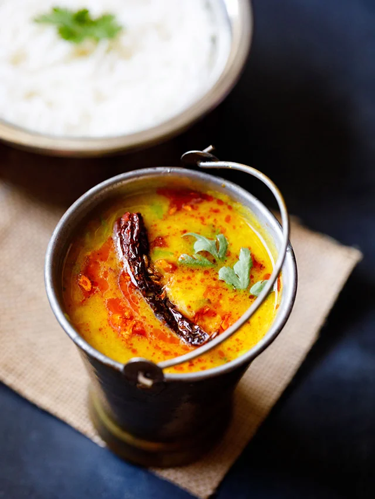

Daal Tadka

Description
Dal Tadka is a popular Indian lentil dish made with arhar dal (husked &
split pigeon pea lentils) or masoor dal (husked & split red lentils).
This Dal Tadka recipe gives you a delicious creamy dal with smoked
flavors.
Ingredients
- Arhar Daal
- Moong Daal
- Ghee
- Spices and Herbs
Steps
-
Rinse 1 cup tuvar dal or arhar dal (split & husked pigeon pea lentils)
for a couple of times in water. Add them to a 3 litre pressure cooker.
-
Add ½ cup chopped onions, 1 cup finely chopped tomatoes, 1 or 2 green
chilies (1 teaspoon of chopped Anaheim pepper or Serrano pepper can be
subbed for green chillies) and 1 teaspoon finely chopped ginger.
-
Pour 2.5 cups of water. If cooking in a pot, then about 4 to 4.5 cups of
water can be added.
-
Add ½ turmeric powder and 1 pinch of asafoetida (hing). If you do not
have asafoetida, then skip it.
- Mix Well
-
Pressure cook the lentils for about 7 to 8 whistles or more till they
become soft and creamy. Mash the cooked lentils with a wired whisk or
with a spoon and keep aside.
-
Once the desired consistency is reached, add 1 to 2 tablespoons low-fat
cream (optional), ½ teaspoon garam masala powder, 2 tablespoons chopped
coriander leaves (cilantro) and salt as per paste. Switch off the the
heat.
-
Mix well so that everything combines uniformly. Check the salt before
you add the tempering. If the salt is less than add more salt to the
dal.
-
Next heat 3 tablespoons oil or ghee (clarified butter) in a small pan.
First, add 1 teaspoon cumin seeds and crackle them. The cumin should get
fried and not be raw, but don’t burn them.
-
Now add 2 to 3 dry red chilies, a generous pinch of asafoetida and 5 to
6 medium sized garlic cloves which have been finely chopped. Let the
garlic brown and the red chilies change color. Do not burn the garlic.
-
Lastly add 1 teaspoon crushed kasuri methi and ½ teaspoon red chili
powder or cayenne pepper. Mix and switch off the stove. Make sure to fry
the tempering ingredients at a low flame, so that you don’t burn them.
- Pour entire tempering along with the oil or ghee into the dal.
-
You can mix the dal with tempering or serve the dal tadka with the
tempering on top it. Garnish with coriander leaves. Serve it hot with
steamed basmati rice, cumin rice or with Indian flatbread like roti or
paratha or chapati or naan.